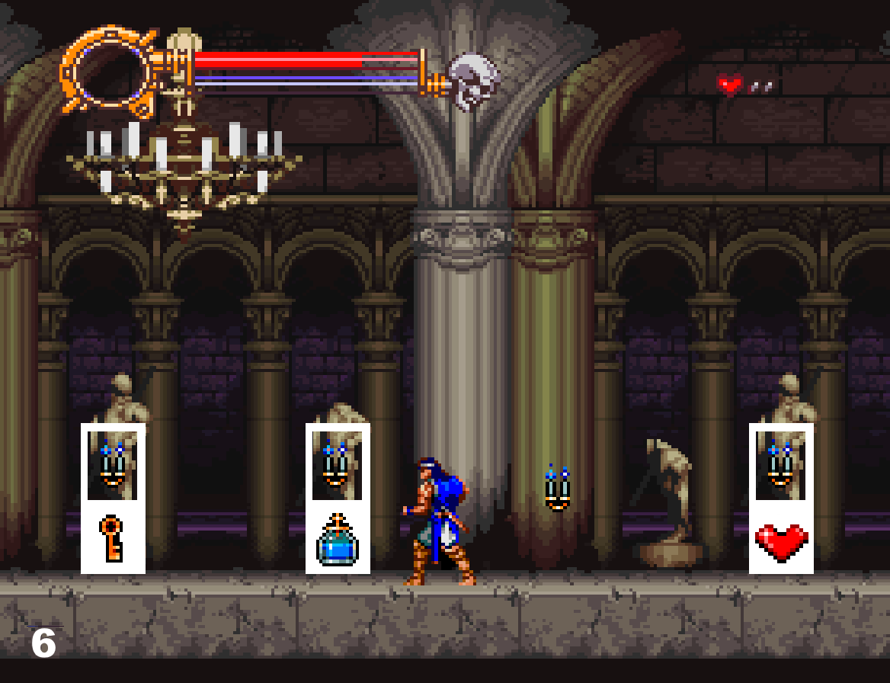
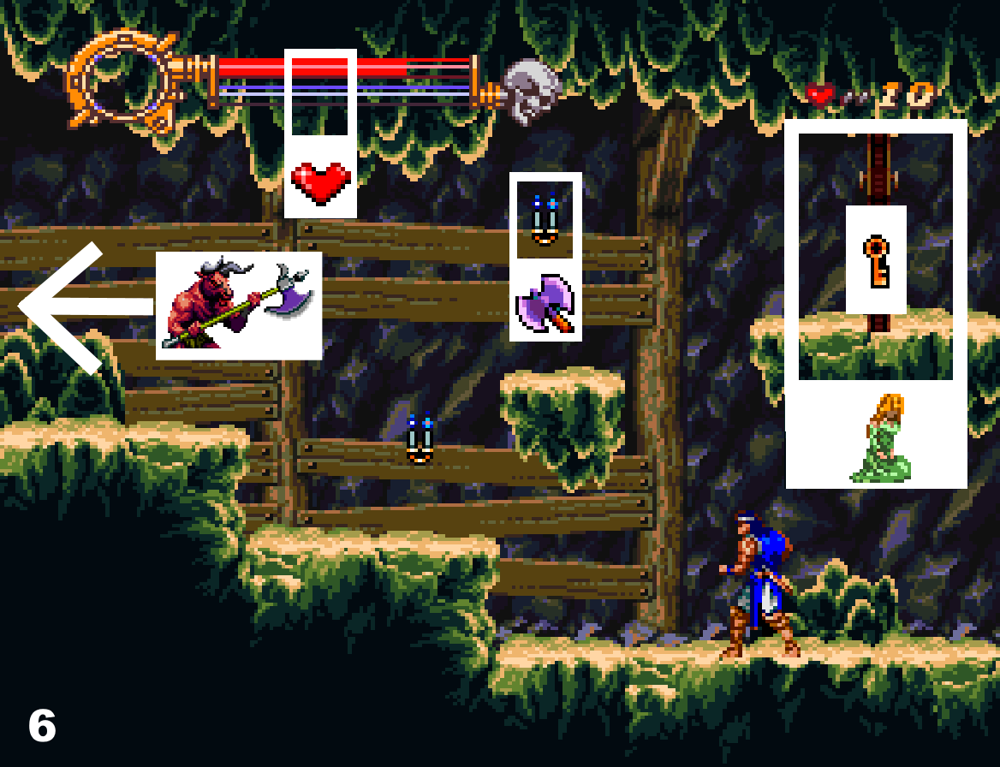
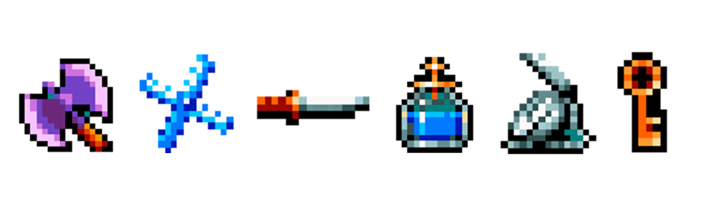
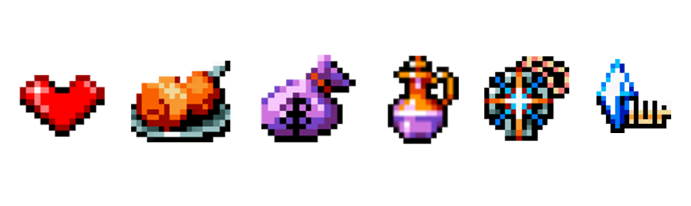
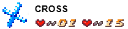
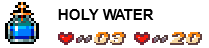
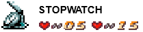
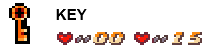

ABOUT THE GAME
Dracula X is a platforming game with linear screens and different routes you can choose. You have three different paths you can take, with three different endings. Each stage has checkpoints between screens, so if you die, you start from the screen, but if you game over, you start from the beginning of the stage. You start with 3 lives, but you can get more during the game. There’s infinite continues. There’s a password system, where you can start with a desired weapon on a desired stage, but only with 10 hearts.
ENDINGS (PATHS)
Annette and Maria are waiting for you to rescue them. They are held captive in different stages. To access them you need to take a specific route and a key to open their door. In stage 3 is where it’s determined which route you would like to take. You can get a bad ending, not saving them. The good ending, where you save Maria only, and the best ending where you save Annette and Maria.
SAVE NOONE - bad ending
At the end of stage 3, you will find a screen filled with pillars. If you fall down the pillars, you will end up in stage 4’ (the catacombs) and you won’t be able to save anyone. If this happens, you can introduce the password for stage 3 to try again if you wish to save them.
SAVE MARIA - Good ending
You need to make it to the end of the screen with the pillars in stage 3. In the next room before the boss, break the last candle
and pick up the key hidden inside and defeat the boss knight. You will get sent to stage 4’. Maria is hidden in a room.
To open her door, you must use the key. If you wish to only save Maria, You don’t need the key anymore. Take left path at the end of the stage and fight the minotaur boss. If you lose the key before finding Maria, you can put the password to start
from the beginning of the level with the key to try again.
SAVE ANNETTE best ending
If you wish to save Annette and get the best ending, save Maria and keep the key until the end of the stage. Once you reach the screen before the minotaur
Use the key to open the door on the right and you will get to stage 5’. There’s a screen where you see a waterfall dropping water.
If you break it, the water will sink down. If you fall from the platform, you will find Anette’s hideout. Then finish the stage and kill the boss. You will get sent to stage 6 after defeating the boss.
If you save Annette, you will fight Death instead of the skull boss at the end of stage 6.
Schema for the route:
GAME BASICS
Jumping is faster than walking. You have a long jump and a small jump. If you press the direction and jump, you will jump farther, but if you jump and then press the direction, you will do a small jump instead. To escape from enemies fast, jump away.
There’s also a backflip if you press jump twice. Allows you to reach platforms that you can’t reach with a single jump, and to dodge enemies and jump over them. You can do a short or a higher backflip if you press jump twice faster or slower. You can cancel the slide animation after the backflip if you whip right before landing.
When you fall from a long
distance Ritcher will duck afterwards. If you do a backflip, Ritcher will slide. You can cancel these two animations to be able to move right away. To cancel them, you have to whip right before landing on the ground. If you whip when you jump to a platform, Ritcher will fall faster than usual so you could miss and fall down.
You can moonwalk if you hold the attack button and move to the opposite side you are facing. This will come in handy in different screens of the game, since it makes the spawns that go across the screen appear in front of the way you are facing, therefore they will never reach you when
There is knock back in this game. You get pushed to the opposite side you are facing if you get hit, and there’s very little i-frames after getting hit. You can’t do anything after getting hit by an enemy until you reach the ground, which makes it very easy to start a hit cycle until you
die. You can avoid getting pushed if you duck, but if you duck and whip, if you get hit at that time, you will get pushed anyway.
Your main weapon is a whip. You can only whip left or right. However, among other items, you can acquire a sub weapon. There are 6 different sub weapons. You can only hold one sub weapon at a time. Each sub weapon has a powerful attack called item crash, which makes you invulnerable until the animation is over. If you pick up another sub weapon, it will be replaced but the old one will fall on the ground and you can pick it up again. If you don’t pick it up, It will fade away after a while.
Sub weapons require hearts to use them. They are displayed at the top right corner. You can have up to 99 hearts. The more hearts you have, the faster you can use your sub weapon, making you shoot a lot of sub weapons uninterrupted.
However, if you have less than 50 hearts, you will shoot less, which can cause whipping in between using the sub weapon. If you have less than 20 hearts, you will whip even more frequently.
There are candles all over the screens. Candles are fixed, which means that they always contain the same, but if you are holding a weapon, and you break a candle where that same weapon should be, you will find a big heart instead.
Candles can contain Sub weapons or items. You can find the following different items:
The 6 different sub weapons. Axe, cross, dagger, holy water, stopwatch and key.
Hearts: for sub weapon usage Chicken: Restores your HP. Money bags: Gives you score. Potion: Invincibility + kills enemies in one hit when touch. Rosary: clears the screen from all the enemies on the screen. 1UP : Gives one life.
There’s hidden chicken and hidden 1UP in certain walls.
Once you cross a screen, you can’t go back to the previous screen. However, you can come back to the screen before if there’s stairs. Candles will respawn when you go back and forth, giving you the chance to get a weapon again, farm hearts infinitely or pick up chicken. Enemies will be back.
You have an HP bar, so you can take many hits. You start with 3 lives. Once you die you will lose your weapon and your hearts. You will respawn in the same screen where you died with 10 hearts and no weapon.
After losing all lives, you can continue, and you will start at the beginning of the stage.
There’s infinite continues, and you can get extra lives in certain stages hidden in walls, or if you defeat bosses with full health. There’s a password system. You can start from a specific level and the desired weapon. If you die (or game over) and lose your weapon or the key, you can always reset the console and introduce the password to recover the weapon you had on or the key, but you will have to start from the beginning of the level with only 10 hearts.
Enemies are scripted, which means that they will always be in the same spot, but some of them, what they do is decided once you cross screens. Usually these enemies are the knight, and some others that move from left to right, like the skeletons. The bosses can be manipulated but some of them have a strong RNG.
There’s a boss at the end of each stage. You can see the boss HP bar under yours displayed in blue. Bosses do a desperation attack when their hp bar is empty. You can’t die from it, but you will take damage. You get a 1UP if you defeat the boss with full HP. You keep your hearts and sub weapon to the next stage. You might not get hit by a boss if the boss is on i-frames.
OTHER STRATEGIES & TIPS
You can stand very far out on a platform, you can use this to make it up on platforms that are very far, or prevent you from falling from platforms when you get hit.
Remember that if you whip before landing on the next platform it can cause Ritcher to fall faster and you will miss the platform, so don’t get tempted on opening a candle before you land on that platform.
Duck to prevent getting kicked out from platforms. If you whip, you will get knocked off even though you are ducking, so if you are not sure, just duck and eat the damage.
Candles can be a bait so if there’s candles, and probably platforms with edges too, enemies might spawn at that point, especially if there’s water under, mermaid spawns are the most common ones.
If a candle is way too high, you can backflip and whip to reach.
If you don’t reach a platform with a normal jump, you can try backflipping to it. Remember to use the whip after landing to prevent Ritcher from sliding.
If you see a succession of platforms, it can be an indicator that enemies are going to spawn, especially if there’s water under. You can get close to the edge to trigger them and moonwalk back to make them go away. If you see that pattern of platforms on a screen, I recommend moving to the edge of it carefully to check if there’s enemies, and moonwalk back so they go away. This works very well against mermaids.
Duck on the platforms if you are not sure that you can kill them, so you don’t fall out of the platform if you get hit.
The moonwalk can also be used to reposition yourself while standing on small platforms,especially if there’s bats or medusa heads that you want them to be on the side you are facing.
Always duck in moving platforms just in case there’s enemies so you don’t fall off the platform.You can get hit and eat the damage if you are not sure because if you whip and get hit, you will fall out of the platform.
Be careful with rotating platforms, if you land very close to the edge, even if you don’t jump on the rotating platform, it will start rotating already, so if you keep walking, you will fall down. If you land very close to rotating platforms, always step back just in case the platform got hit and rotates.
Neutral jump to stand on moving/breaking platforms. On rotating platforms, jump towards the opposite way.
Go back and forth when there’s a staircase on the stage. You can infinitely respawn candles so you can farm hearts or recover full HP. You can also come back to pick up a weapon from the other screen.
Sometimes it’s easier to damage boost past the enemies rather than killing them. .You can also jump over certain enemies. Preferably jump to run away from them once you dodge them since jumping is faster than walking.
You can use the knights to clip up platforms in certain levels if you jump on their spear in the correct timing and position. I will show you how to do this trick in the playthrough (it can be used in level 2 and 5).
Sub weapons are situational. Each of them have a purpose and they work great in different segments of the game.
Not so many people know that you can do item crash while not holding any sub weapon. You will do a fire long whip and makes you invulnerable as any other item crash. It costs 15 hearts.
Also not so many people know that the key can be used as any other item crash. If enemies touch it, they get killed. The item crash gives you invulnerability and it costs no hearts, but you need to have 15 hearts to be able to use it.
Always use the item crash to become invulnerable if you are about to get hit.
SUB WEAPONS
The sub weapon is a secondary weapon you can acquire inside candles. You can use it pressing up and attack, and it consumes hearts
which you can also find inside candles. Sub weapons are situational, they will make the stages much easier. Each sub weapon is different, they cost different amounts of hearts, and they have a powerful attack that consumes a higher amount of hearts, we refer to as the ‘’item crash’’. All item crashes make you invulnerable until the animation is over.
There is 6 subweapons.
Picking up another sub weapon will replace the one you hold, but the old one will fall onto the ground. It will despawn after a while if you don’t pick it up.
The more hearts you have, the faster you can use your sub weapon, making you shoot a lot of them uninterrupted. However, if you have less than 50 hearts, you will shoot less, which can cause whipping in between. The amount of whips between throwing the sub weapon will increase exponentially while the heart count is going down. If you have less than 20 hearts, you will be mostly whipping.
You can use the item crash to become invulnerable so you avoid attacks that you couldn’t prevent any other way. Press X to use the item crash.
You can also use the item crash to clear the screen from enemies or dangerous objects around you.
Not so many people know that you can also do an item crash while not holding any sub weapons, costing 15 hearts. Ritcher charges it's whip and attacks with a furious fire whip. It makes you invulnerable just like any other item crash.
The heart count is displayed on the top right corner of the screen. You can pick up to 99 hearts. I will explain with more details each sub weapon, with their respective usage and item crash usage. I organized them from the least hearts that you require, to the one that requires the most, displaying the amount of hearts necessary for using them on the left, and the hearts required for the item crash on the right. After this I will give you tips for enemies and which weapon is good against them in the ‘’enemies’’ section.
The axe travels in an arc above you. It’s very useful to kill enemies that are in different platform levels, enemies above you and enemies that are in a weird angle that’s hard to hit with a whip. You can also use it to reach candles that are higher than you, or hard to reach.
The item crash is a circle of axes that clears weak enemies around you once the circle expands. Remember that It gives invulnerability until the animation is over, just like any other item crash.
The knife is the fastest sub weapon. It clears weak enemies in a horizontal line in front of you. It’s very good against weak enemies that jump towards you, or deal damage to enemies that are far away and you can’t reach.
The item crash is not very strong, but it’s very useful for enemies that stand in front of you, or for moments when you need the i-frames to dodge an attack. It’s the strongest item crash against Death.
The cross appears in front of you, staying for a short amount of time and coming back. It deals a lot of damage per second, and it gives you a great coverage in front of you. You can use it to cover yourself and just walk past enemies that spawn in front of you.
Use it to deal a lot of damage, and for enemies that are far.
The item crash is similar to the axe, but it deals damage per second around you, which is good for bosses or healthy enemies. Gives you i-frames.
The holy water releases a fire on the ground dealing tons of damage per second if it makes contact with the enemy. It’s the only sub weapon that can damage knights.
The item crash makes you invulnerable but it’s not strong so we’re going to ignore it.
The stopwatch slows all enemies that appear on the screen for a short amount of time, but what we will focus on is on the item crash.
The item crash is what we are going to focus on. It spawns a rotating circle of spheres around you that deals immense damage per second to the bosses, sometimes making you invulnerable since the bosses might not deal damage to you if they are on i-frames.
It also kills all small enemies around it, acting as a shield and dealing a lot of damage to big enemies in the way.
The key is the item necessary to open Maria’s chamber and the door to the stage where Anette is held captive. You find it at the end of stage 3, after you make it past the pillar section, on the screen before the knight boss. When you pick it up it appears as a sub weapon, so you won’t be able to have any other sub weapon if you aim to rescue them after picking the key until you open their doors.
Ritcher will do a melee attack in front of him if you use it as a normal sub weapon. It cost no hearts. It’s very strong and it will kill all enemies in one hit, but it’s very hard to use it due to its small hitbox. Using the sub weapon attack while holding the key is how you open the doors.
The item crash costs 0 hearts, but you need at least 15 hearts to be able to use it.
It’s the most powerful sub weapon when it comes to dodging, since it gives you i-frames for free you can keep using it without limit.
The key will appear in the hand of the direction you are facing, so for example if you face left, the key will appear in the left hand. The key still deals damage when you use it as an item crash, so you can still kill enemies or even break candles.
ENEMIES - TIPS & STRATEGIES
I collected all kinds of strategies and tips for certain enemies or the most annoying ones, so it will help you master this game and make it easier:
SKELETONS
You can drag the skeleton with you if you are facing it. This is good to use when you need a skeleton to go down from high platforms, or to make it jump to its death.
You can destroy the bone they throw at you with an attack. The axe is very strong.
since you can reach them when they’re in other platform levels. The knife is also good when they jump towards you or they’re in front of you.
BATS & MEDUSA HEADS
They spawn on certain screens. They appear at the border of the screen where you are facing and leave to the other side of the screen.
The moonwalk is essential if you want to make it through the screen without getting hit, because the enemies will be
spawning from the side you are facing, so you can easily walk backwards and they will never reach your position until you stop walking.
The only difference is that the bats can also appear hanging from platforms, and they will wake up as soon as you get in range. They are invulnerable while hanging.
Trying to reach other platforms where medusa or bats appear, wait until you kill one to quickly make it to the next platform. Duck if you are not sure so if you get hit you don’t fall.
You can use the boomerang to cover your way while jumping or walking, or you can throw axes before you jump to other platforms to guarantee that the path is clear.
MERMAIDS
If you see a lot of platforms with holes in between, or water, that’s probably where mermaids will spawn.
If you see that pattern of platforms on a screen, I recommend getting to the edge of the platform carefully so you trigger them, and moonwalk back to make them jump away.
Usually candles that are on other platforms where there’s a pit under and water, could be
an indicative of mermaid spawns. If you fall where the candles are, either duck or jump away in case there will be a mermaid in your face.
They will also jump away if you walk over or under them while moonwalking.
If you are too close to an edge, and there's a mermaid, you can duck to prevent yourself from falling, because they also slide towards you sometimes
Using the boomerang and walking past is a great option to get rid of mermaids while walking past the screen.
KNIGHTS
There’s a variety of knights in the game. They differ from
each other but they have one thing in common: they are extremely weak to the holy water.
They can shield themselves against sub weapons besides holy water. You can cheese throwing axes from below if you bait the knight to a specific position and walk under to find the correct angle. You can break their shield if you land a hit that way. You can also destroy the axes they throw.
Red and blue knights will charge at you if you are in front of them. Red knights are more likely to do this. You can jump over them by doing a backflip, or you can duck and wait until they make it past you, taking a little bit of damage and jumping away afterwards.
The purple knight will always swing at you after he spins the lance twice. You can get away from it if you jump away, and you can move back and forth while fighting them to prevent getting hit by the tip of the lance. They can only swing the
spear at you once. They can also spear up and down, you can bait them to spear in a certain spot so you can kill the enemies safely.
When you whip, the knight will rotate his weapon and stand in place, you can use this to make the knight stand in a specific spot.
You can clip to upper platform levels with the knight sphere. His attack will push you so if you jump in the correct timing, you can land in upper platform levels to skip parts of the screen. I will show you how to do these clips in the walkthrough. You can use the whip to lock them in place like we just saw before. Remember they can only swing the spear at you once, so if they did, you can reset the screen if you go downstairs and back, then they will swing the spear again.
BIRDS
They move differently depending on your position.
If you are very far away from them, they will move towards you in a straight line.
But if you are closer or farther down, they will fly towards your position.. You can almost despawn all the birds you encounter in the screen if you wait long enough and bait them towards your position at the very edge of the screen.
The axe is very good against the birds, since it can kill them before they wake up, and also they will always be above you.
The stopwatch can slow them down, and the item crash shield yourself from them.
DINO SKULLS
You can stand at a distance without getting hit by the fire. You can kill the fireballs they shoot. Axe comes in handy when they are on other platform levels, or they are far away in an awkward spot.
SNAKE SKULL
Most of the time you can make it under them or take a damage boost to skip them.
FLEAMAN
When they’re carried by the bats, you want to throw axes as fast as you can. Keep calm and don’t stop walking. If they get behind you, jump quickly to leave them behind. The axe can reach them and use the item crash if you are surrounded.
The knife is very good against them when they are far away in front of you. Keep calm, don’t move too much and kill them one by one before scrolling the screen.